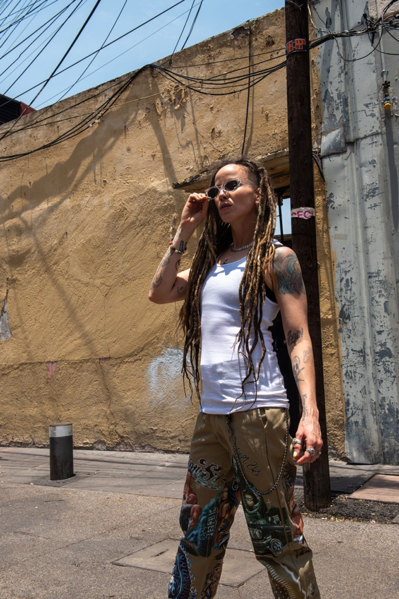
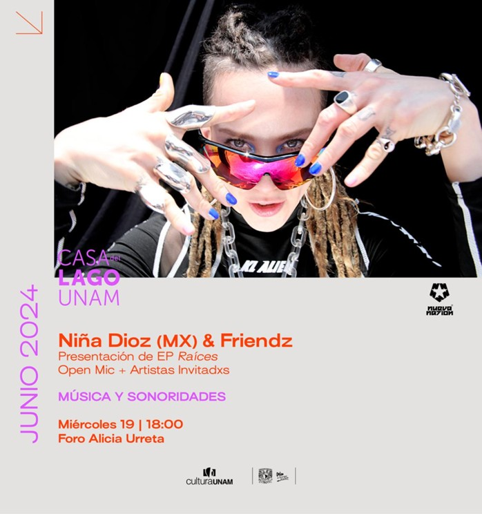

El próximo 19 de junio, el Foro Alicia Urreta de Casa del Lago UNAM será el escenario donde Carla Reyna, mejor conocida como Niña Dioz, presentará su esperado EP, Raíces. Una celebración única en el marco del mes del orgullo.
Desde su debut en 2007, Niña Dioz ha sido un fenómeno. Reconocida como una de las raperas latinas más influyentes de todos los tiempos, ha sido inspiración no solo por su talento, sino por ser la primera rapera abiertamente queer de México.

LA FUSIÓN: HIP HOP + BOLERO + MARIACHI
Su nueva producción, Raíces, fusiona el hip hop con sonidos latinos como el mariachi y la salsa, ofreciendo un viaje profundo a través de sus inspiraciones y el empoderamiento femenino.
Al editar este trabajo bajo su propio sello, Nueva Nation, Niña Dioz demuestra su compromiso con la comunidad LGBTTTIQ+, buscando abrir caminos en un género predominantemente masculino y abriendo puertas para nuevos artistas de la diversidad.
DETALLES DEL ENCUENTRO
- RECINTO: FORO ALICIA URRETA
- HORARIO: 18:00 HRS
- INVITADXS: ALEXA MIYAR, SAMUEVI, ESAMIPAU!
- ENTRADA: GRATUITA

No se pierdan esta oportunidad única de escuchar en vivo a un ícono que sigue rompiendo estereotipos. Nos vemos el 19 de junio para celebrar el orgullo, la música y el respeto.